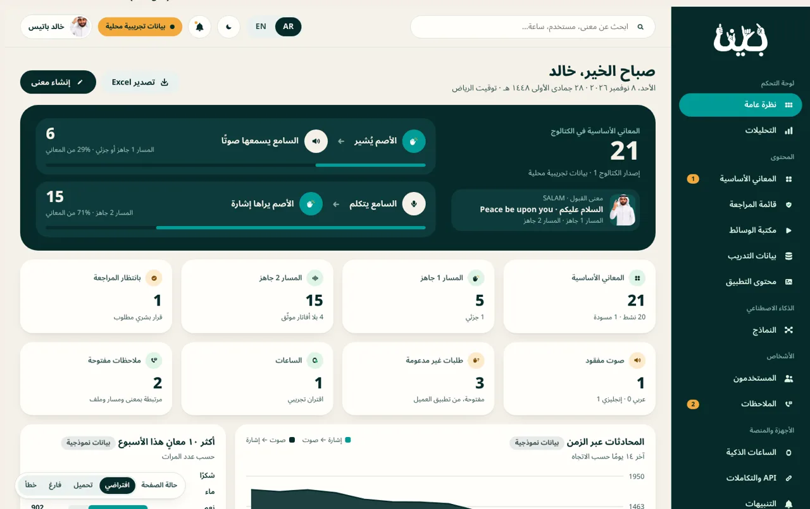
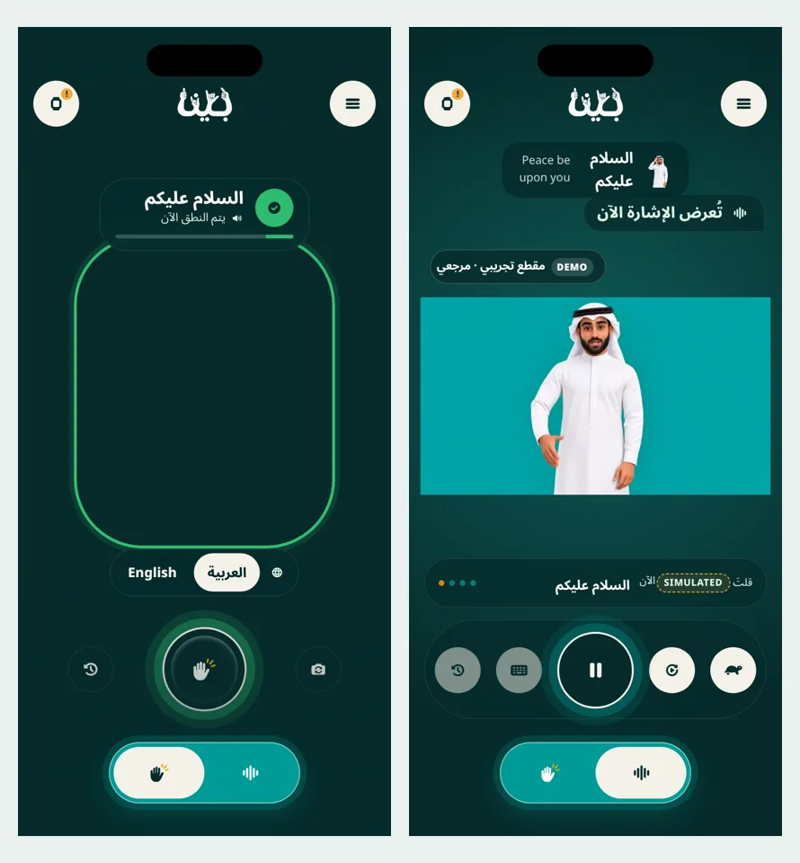

 Admin, validated The same approved Admin, now with Core Meanings, both flows inside each meaning, semantic mapping, media and review, and Excel management. BINA_Admin_VALIDATED_v5.html Open Admin
 Customer app, validated The same approved app, now connected to the same meanings: sign to speech in Arabic and English, speech to avatar. UI reference for the Flutter app. BINA_User_VALIDATED_v3.html Open Customer